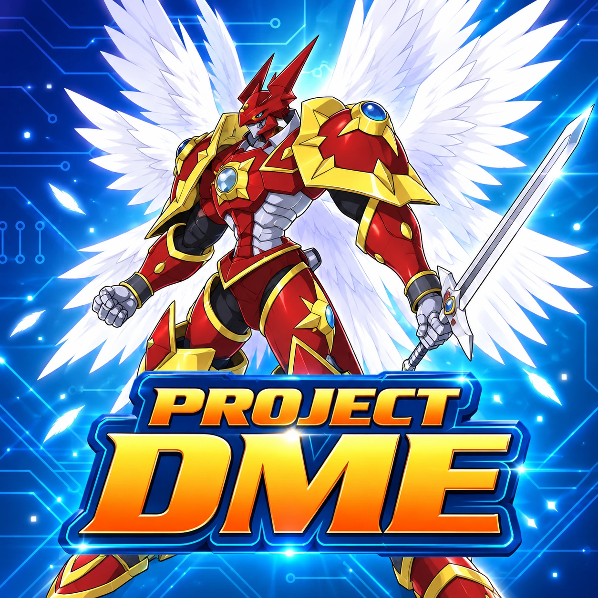
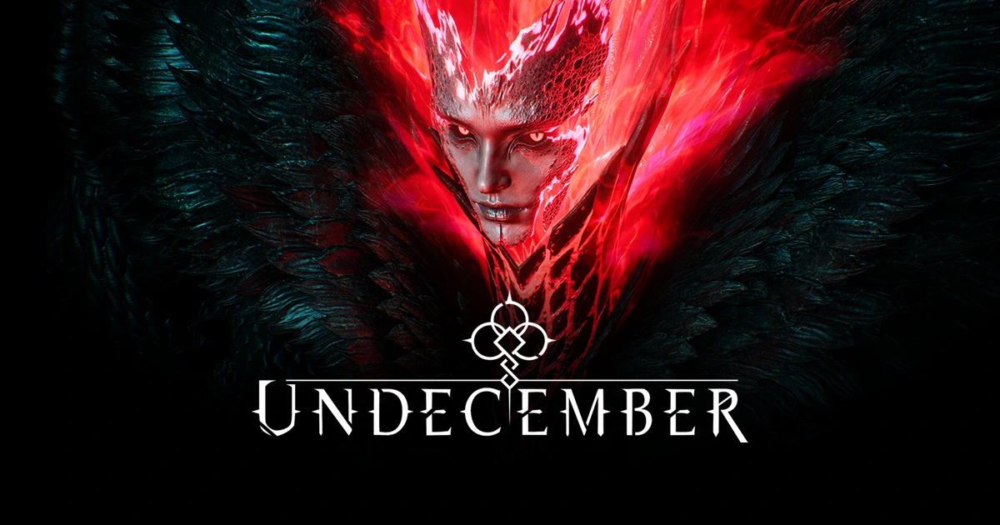
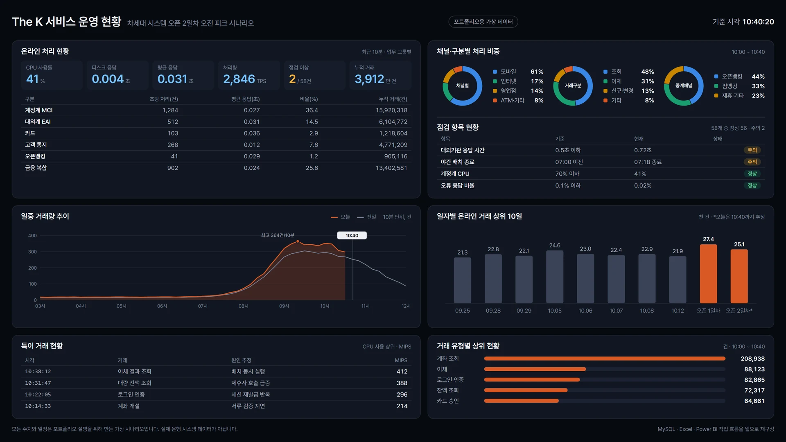

프로젝트
2020년부터 참여한 7개 프로젝트의 담당 업무와 사례입니다.
카드를 누르면 상세 사례로 이동합니다.
주요 사례
-
TALES RUNNER
라이브 서비스 운영과 사업 기획
- 장르
- 캐주얼 러닝 액션
- 플랫폼
- PC
-

PROJECT DME
프로젝트 관리와 AI/자동화 적용
- 장르
- 어드벤처 MMORPG
- 플랫폼
- PC
-

UNDECEMBER
업데이트와 라이브 서비스 운영
- 장르
- 핵앤슬래시 액션 RPG
- 플랫폼
- PC / 모바일
-

PROJECT NEON
개발 일정과 협업, 후속 작업 관리
- 장르
- 서브컬처 ARPG
- 플랫폼
- 크로스 플랫폼 (개발 목표)
-

가디스 오더
개발 QA와 Jira 이슈 담당자 지정 흐름 정리
- 장르
- 횡스크롤 액션 RPG
- 플랫폼
- 모바일
-

LEGEND OF SLIME
개발/출시 준비와 라이브 운영
- 장르
- 방치형 RPG
- 플랫폼
- 모바일
-

KB국민은행 The K
데이터 가공/분석과 Power BI 대시보드 제작